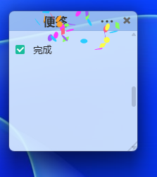
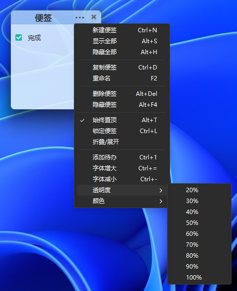

不只是便签，而是一个完整的桌面生产力工具
每个便签都是独立的透明无边框窗口，自由拖放、调整大小，想放哪就放哪。
一键切换颜色，透明度 10%–100% 可调，字体大小 8px–72px 自由控制。
置顶显示、锁定防误编辑、拖拽时自动吸附边缘，整齐排列不费力。
Ctrl+1 插入 checkbox，点击切换：待办 → 进行中 → 完成，完成瞬间有庆祝特效。
一键导出 Markdown、生成精美分享卡片（渐变背景 + 进度条 + 鼓励语），保存 PNG 或复制到剪贴板。
隐藏/显示/折叠全部便签，新建、导出、语言切换，左键单击一键显示。
真实截图，所见即所得

12 种颜色主题

待办清单 & 进度追踪

窗口自动吸附
精美分享卡片

系统托盘菜单

完整功能演示
键盘操作，效率翻倍
| 操作 | 快捷键 |
|---|---|
| 新建便签 | Ctrl + N |
| 复制便签 | Ctrl + D |
| 重命名 | F2 |
| 置顶 / 取消置顶 | Alt + T |
| 锁定 / 解锁 | Ctrl + L |
| 添加待办 | Ctrl + 1 |
| 字号调节 | Ctrl + = / - |
| 透明度调节 | Ctrl + Shift + ↑ / ↓ |
| 显示全部便签 | Alt + S |
技术栈